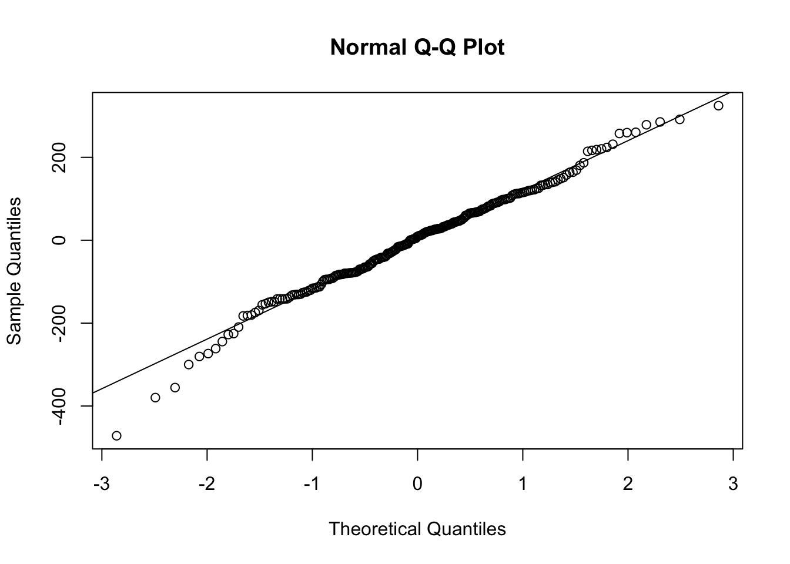
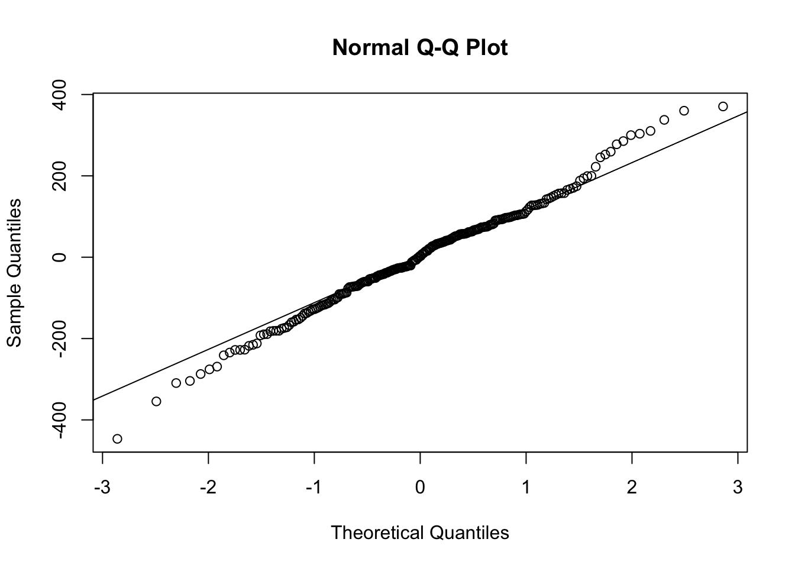
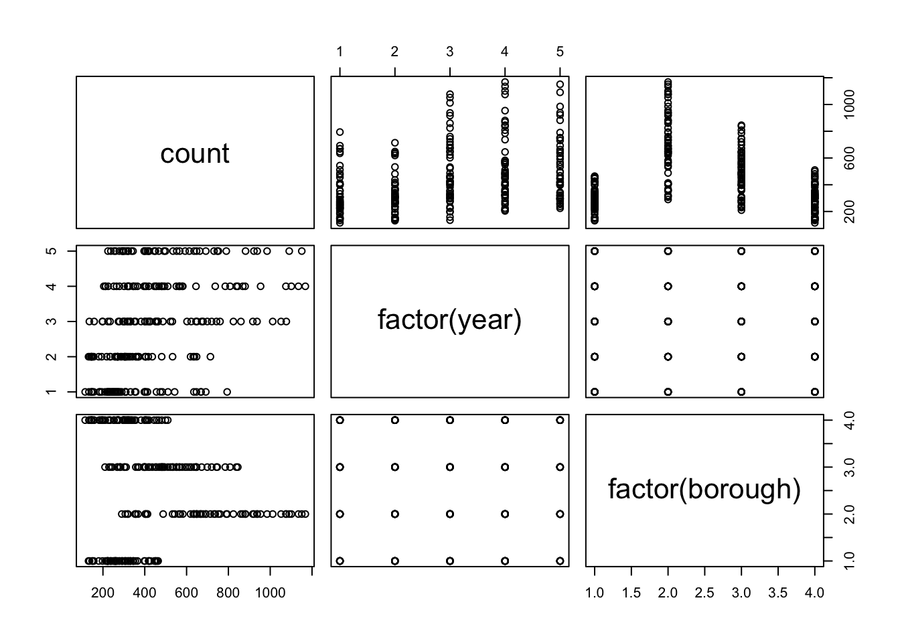
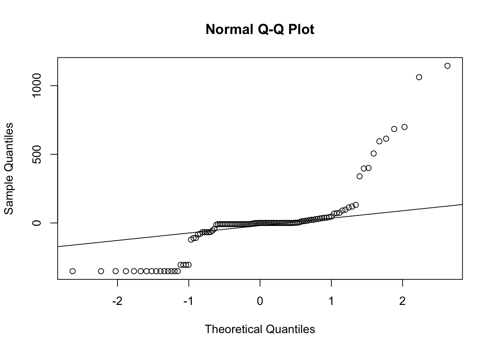
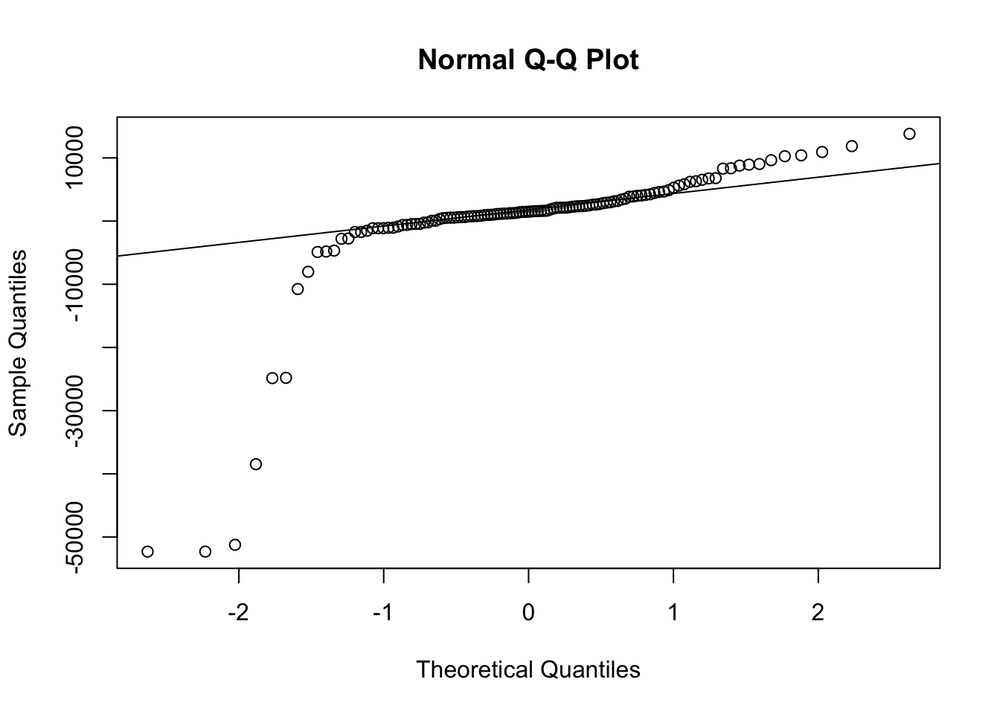

We can see that there are differences in the average rat sightings across years and boroughs. Through ANOVA, we can see if these differences are statistically significant.
rat_sightings =
read_csv ("./data/Rat_Sightings.csv") |>
janitor::clean_names(case = "snake") |>
separate(created_date, sep="/", into = c("month", "day", "year")) |>
separate(year, sep=" ", into = c("year")) |>
filter(borough != "STATEN ISLAND") |>
filter(year %in% c("2019", "2020", "2021", "2022", "2023")) |>
mutate(
borough_id = recode(
borough,
"MANHATTAN" = 1,
"BRONX" =2,
"BROOKLYN"=3,
"QUEENS"= 4)) |>
mutate(
month = as.numeric(month),
year = as.numeric(year)
) |>
select(unique_key, month, day, year, location_type, incident_zip, borough, location, borough_id) |>
mutate(
borough = str_to_sentence(borough)
)
rat_sightings_agg = rat_sightings |>
group_by(year, borough, month) |>
filter(borough != "Unspecified") %>%
summarise(count = n())
anova_result = aov(count ~ factor(year) * factor(borough), data = rat_sightings_agg)
broom::tidy(anova_result)## # A tibble: 4 × 6
## term df sumsq meansq statistic p.value
## <chr> <dbl> <dbl> <dbl> <dbl> <dbl>
## 1 factor(year) 4 2185688. 546422. 33.0 1.86e-21
## 2 factor(borough) 3 6927195. 2309065. 139. 3.02e-50
## 3 factor(year):factor(borough) 12 548327. 45694. 2.76 1.66e- 3
## 4 Residuals 216 3579973. 16574. NA NAanova_result_no_interaction = aov(count ~ factor(year) + factor(borough), data = rat_sightings_agg)
broom::tidy(anova_result_no_interaction)## # A tibble: 3 × 6
## term df sumsq meansq statistic p.value
## <chr> <dbl> <dbl> <dbl> <dbl> <dbl>
## 1 factor(year) 4 2185688. 546422. 30.2 3.72e-20
## 2 factor(borough) 3 6927195. 2309065. 128. 1.63e-48
## 3 Residuals 228 4128300. 18107. NA NAWe want to check the assumptions for the ANOVA tests ran above. There are three assumptions that should be met when computing an ANOVA:
We also checked the normality of residuals in the below code. From the Normal Q-Q plot of both model residuals, the points are quite close to the fitted diagonal line. We also conducted Shapiro-Wilk tests for normality of residuals for both models and with a null hypothesis that the residuals follow a normal distribution and an alternative hypothesis that the residuals does not follow a normal distribution. The p-value for the no interaction model is 0.2694 and the p-value for the interaction model is 0.03883. At a 5% level of significance, we can conclude that the residuals of the interaction model follow a normal distribution but the residuals for the no interaction model do not follow a normal distribution.
# Extract residuals for the interaction model
residuals_interaction <- residuals(anova_result)
# Check normality of residuals for the interaction model
qqnorm(anova_result$residuals)
qqline(anova_result$residuals)
# Shapiro-Wilk test for normality
shapiro.test(anova_result$residuals)##
## Shapiro-Wilk normality test
##
## data: anova_result$residuals
## W = 0.98759, p-value = 0.03883# Extract residuals for the interaction model
residuals_no_interaction <- residuals(anova_result_no_interaction)
# Check normality of residuals for the model without interaction
qqnorm(residuals_no_interaction)
qqline(residuals_no_interaction)
# Shapiro-Wilk test for normality
shapiro.test(anova_result_no_interaction$residuals)##
## Shapiro-Wilk normality test
##
## data: anova_result_no_interaction$residuals
## W = 0.99244, p-value = 0.2694# Shapiro-Wilk test for normality
shapiro.test(residuals_no_interaction)##
## Shapiro-Wilk normality test
##
## data: residuals_no_interaction
## W = 0.99244, p-value = 0.2694# Check homoscedasticity for the interaction model
plot(anova_result$model)
# Check homoscedasticity for the model without interaction
plot(anova_result_no_interaction$model)
The ANOVA test for the interaction model, which met all of the assumptions of an ANOVA test, results in a p-value <0.001 at 5% level of significance. We can conclude that the average sightings by borough and by year are statistically different.
We conducted one-way ANOVA tests to compare the
total_organic and total_refuse waste tonnage
across boroughs. Before interpreting the ANOVA results, we checked the
assumptions of normality and homogeneity of variances.
Homogeneity of variances, the assumption that the variance within each group is the same, was checked using Bartlett’s test. A non-significant result (p > 0.05) would suggest that this assumption holds true.
For normality, we examined the residuals of our ANOVA model. The residuals should follow a normal distribution for the ANOVA results to be valid. This was checked using Q-Q plots, where a close alignment of the residuals with the reference line would indicate normality.
#ANOVA tests for both organic and refuse
anova_model_organics <- aov(total_organics ~ borough, data = waste_tonnage)
anova_result_organics <- broom::tidy(anova_model_organics)
anova_model_refuse <- aov(total_refuse ~ borough, data = waste_tonnage)
anova_result_refuse <- broom::tidy(anova_model_refuse)
# Normality check with Q-Q plots
qqnorm(anova_model_organics$residuals)
qqline(anova_model_organics$residuals)
qqnorm(anova_model_refuse$residuals)
qqline(anova_model_refuse$residuals)
# Homogeneity of variances check with Bartlett's test
bartlett_test_organics <- bartlett.test(total_organics ~ borough, data = waste_tonnage)
bartlett_test_refuse <- bartlett.test(total_refuse ~ borough, data = waste_tonnage)
# Output ANOVA results
list(anova_result_organics, anova_result_refuse)## [[1]]
## # A tibble: 2 × 6
## term df sumsq meansq statistic p.value
## <chr> <dbl> <dbl> <dbl> <dbl> <dbl>
## 1 borough 4 2701708. 675427. 10.5 0.000000296
## 2 Residuals 112 7209968. 64375. NA NA
##
## [[2]]
## # A tibble: 2 × 6
## term df sumsq meansq statistic p.value
## <chr> <dbl> <dbl> <dbl> <dbl> <dbl>
## 1 borough 4 37843283363. 9460820841. 82.1 2.19e-32
## 2 Residuals 112 12913077883. 115295338. NA NA#ANOVA tests for both organic and refuse
anova_model_organics <- aov(total_organics ~ borough, data = waste_tonnage)
anova_result_organics <- broom::tidy(anova_model_organics)
anova_model_refuse <- aov(total_refuse ~ borough, data = waste_tonnage)
anova_result_refuse <- broom::tidy(anova_model_refuse)The ANOVA test was performed to assess the differences in organic waste tonnage across the boroughs. This revealed statistically significant differences in organic waste tonnage among the boroughs (F(4, 112) = 10.5, p < 0.05).
Similarly, the ANOVA test was conducted to examine the differences in refuse waste tonnage across the boroughs.The ANOVA test revealed statistically significant differences in refuse waste tonnage among the boroughs (F(4, 112) = 82.1, p < 0.001).
The rat sightings data set was cleaned to show the number of rat sightings for 2022 and 2023 by year, month, and borough. Then, the rat sightings data was merged with the waste tonnage data by year, month, and borough.
Months were limited to April through November for 2022 and 2023 to compare the active months of the 2023 trash time change initiative to the control of 2022. Months were included as a continuous covariate within the linear model to adjust for seasonal variations in rat sightings.
waste_tonnage_2 = read_csv("data/DSNY_Monthly_Tonnage_Data_20231202.csv") %>%
clean_names(case = "snake") %>%
mutate(date_split = strsplit(month, "/")) %>%
mutate(
year = as.integer(sapply(date_split, function(x) x[1])),
month = as.integer(sapply(date_split, function(x) x[2]))
) %>%
filter(year %in% c(2022, 2023)) %>%
mutate(total_organics = resorganicstons + schoolorganictons)
waste_tonnage_2 = waste_tonnage_2 %>%
group_by(borough, month, year, borough_id) %>%
summarise(
total_organics = sum(total_organics, na.rm = TRUE),
total_refuse = sum(refusetonscollected, na.rm = TRUE)
)
waste_tonnage_2$borough_id <- as.factor(waste_tonnage_2$borough_id)
waste_tonnage_2$year <- as.factor(waste_tonnage_2$year)
rat_count_month <- rat_sightings %>%
select(unique_key, month, year, borough, borough_id) %>%
filter(year %in% c("2022", "2023"), borough != "Unspecified") %>%
group_by(borough, borough_id, year, month) %>%
summarise(sighting_n = n_distinct(unique_key))
rat_count_month$borough_id <- as.factor(rat_count_month$borough_id)
rat_count_month$month <- as.integer(rat_count_month$month)
rat_count_month$year <- as.factor(rat_count_month$year)
rat_waste_month_merged = left_join(rat_count_month, waste_tonnage_2, by = c("borough_id", "month", "year", "borough")) %>%
filter(!(month %in% c("1","2","3","12"))) rat_sightings_fit <- lm(sighting_n ~ total_refuse + borough + year + month, data = rat_waste_month_merged)y(Number of Rat Sightings) = Intercept + Total Waste (x1) + Borough (x2) + Year (x3) + Month (x4)
rat_sightings_fit |>
broom::glance()|>
knitr::kable(digits = 3)| r.squared | adj.r.squared | sigma | statistic | p.value | df | logLik | AIC | BIC | deviance | df.residual | nobs |
|---|---|---|---|---|---|---|---|---|---|---|---|
| 0.85 | 0.834 | 108.05 | 53.689 | 0 | 6 | -386.792 | 789.583 | 806.855 | 665469.4 | 57 | 64 |
With an R2 = 0.85, the independent variables (total waste, borough, year) in this model appear to explain about 85% of the variance in the dependent variable (number of rat sightings).
rat_sightings_fit|>
broom::tidy() |>
select(term, estimate, std.error, statistic, p.value) |>
mutate(term = str_replace(term, "^borough", "Borough: ")) |>
mutate(term = str_replace(term, "^total_refuse", "Total Waste")) |>
mutate(term = str_replace(term, "^year", "Year: ")) |>
mutate(term = str_replace(term, "^month", "Month")) |>
knitr::kable(digits = 6)| term | estimate | std.error | statistic | p.value |
|---|---|---|---|---|
| (Intercept) | 377.177949 | 87.880232 | 4.291954 | 0.000069 |
| Total Waste | 0.003362 | 0.001488 | 2.258693 | 0.027746 |
| Borough: Brooklyn | 478.557914 | 63.080104 | 7.586511 | 0.000000 |
| Borough: Manhattan | 294.600137 | 38.281980 | 7.695530 | 0.000000 |
| Borough: Queens | -33.265192 | 53.415768 | -0.622760 | 0.535926 |
| Year: 2023 | -24.703507 | 28.092224 | -0.879372 | 0.382892 |
| Month | -16.971263 | 6.306680 | -2.690998 | 0.009332 |
Total Waste For every unit increase in total waste, the number of rat sightings increased by 0.003362, adjusting for borough, year, month. At a 5% level of significance, there was a statistically significant relationship between the number of rat sightings and the total waste (P=0.03).
Year While there was a decreased rate of rat sightings in 2023 compared to 2022, there was not a statistically significant relationship between the number of rat sightings and year at the 5% level of significance (P=0.38), adjusting for total waste, borough, and month.
Borough
Queens: The number of rat sightings in Queens was not significantly different from the numnber of rat sightings in the Bronx at the 5% level of significance (P=0.54), adjusting for total waste, year, and month.
Manhattan: The number of rat sightings in Manhattan was significantly different from the number of rat sightings in the Bronx at the 5% level of significance (P<0.001), adjusting for total waste, year, and month.
Brooklyn: The number of rat sightings in Brooklyn was significantly different from the number of rat sightings in the Bronx at the 5% level of significance (P<0.001), adjusting for total waste, year, month.
Month There was a statistically significant relationship between the number of rat sightings and month at the 5% level of significance (P=0.009), adjusting for total waste, year, and borough. This reflects the seasonality that was seen in earlier visualizations of rat sightings per month.